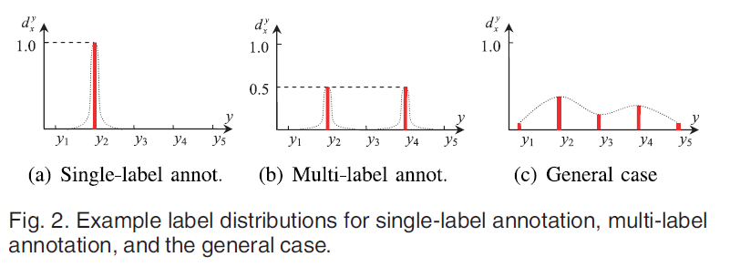
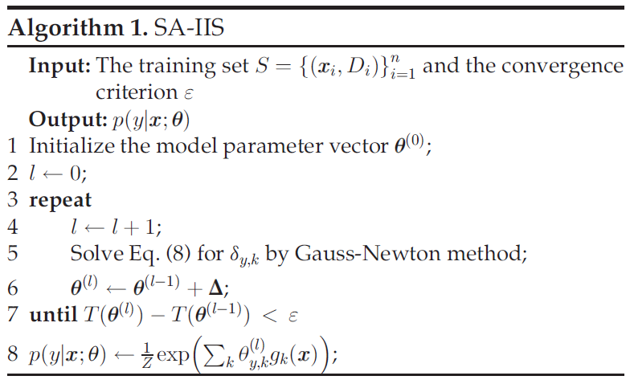
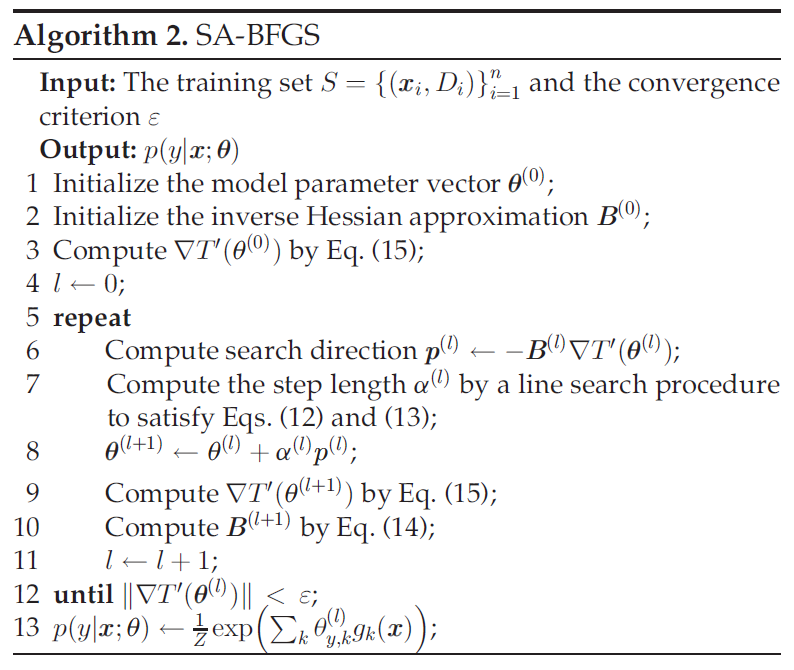
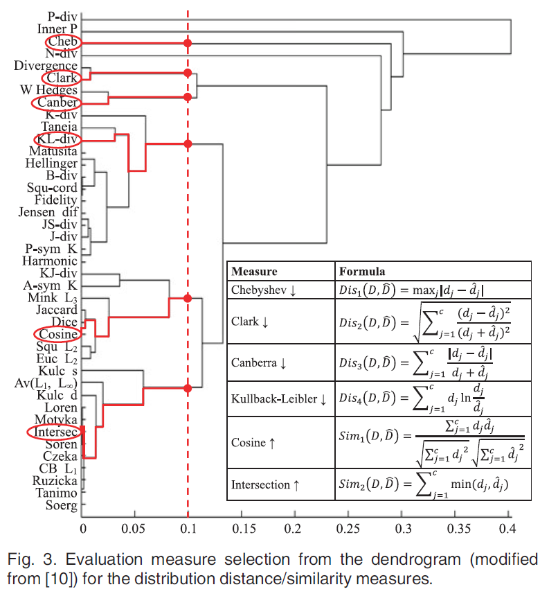
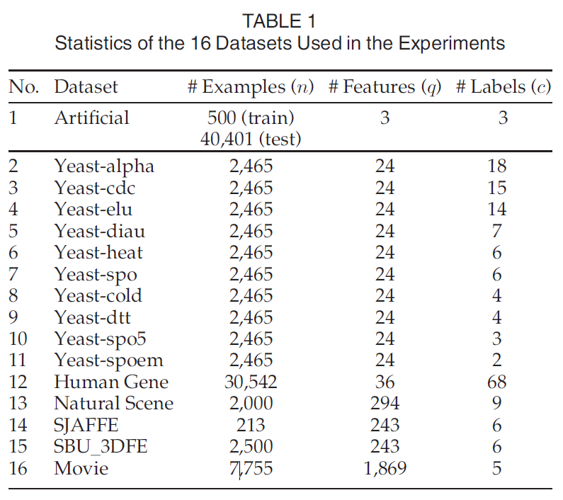
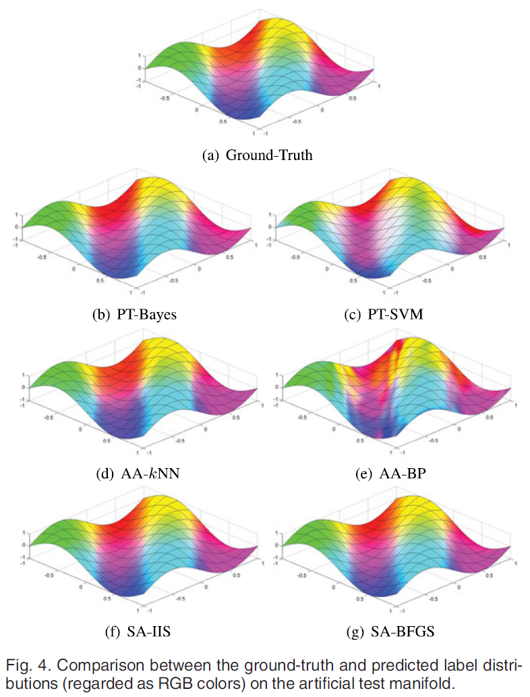
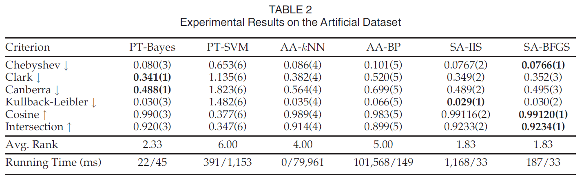
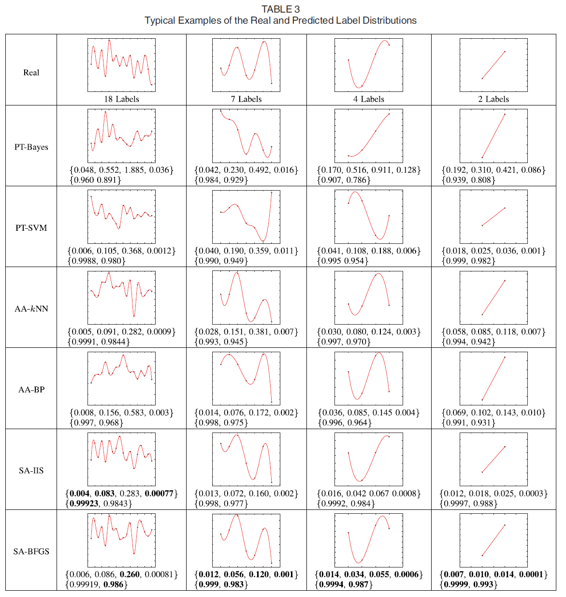
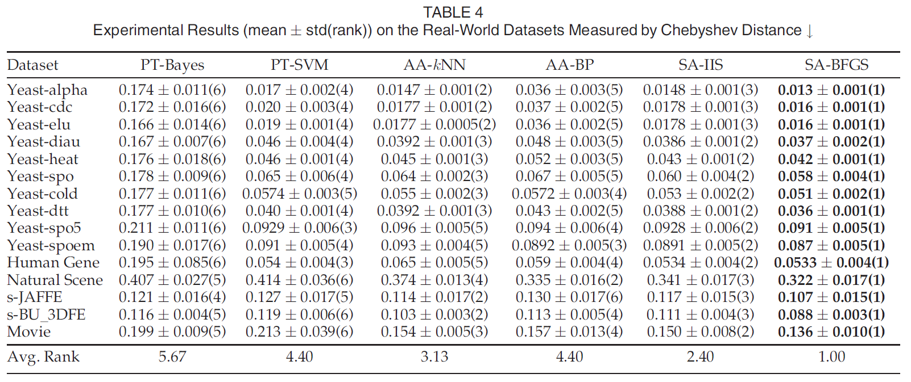

Geng, 2016, Label distribution learning, IEEE Transactions on Knowledge and Data Engineering. pdf
Formulation of LDL
- Notation
- Input space: \(\mathbf{x} \in \mathcal{X} = \mathbb{R}^q\)
- Complete set of labels: \(\mathcal{Y} = \{ y_1, \cdots, y_c \}\)
- Label distribution of \(\mathbf{x}_i\): \(D_i = \{ d_{\mathbf{x}_i}^{y_1}, \cdots, d_{\mathbf{x}_i}^{y_c} \}\)
- Description degree of \(y\) to \(\mathbf{x}\): \(d_{\mathbf{x}}^y\)
- \(d_{\mathbf{x}}^y \in [0,1]\) and \(\sum_y d_{\mathbf{x}}^y = 1\)
- Training set: \(S = \{ (\mathbf{x}_1, D_1), \cdots, (\mathbf{x}_n, D_n) \}\)
- Learn a conditional probability mass function \(p(y|\mathbf{x})\) from \(S\), where \(\mathbf{x} \in \mathcal{X}\) and \(y \in \mathcal{Y}\)
- Optimization formulation
- Given a parametric model \(p(y|\mathbf{x} ; \theta)\), the goal of LDL is to find \(\theta\) that can generate a distribution similar to \(D_i\), given \(\mathbf{x}_i\)
- Example: Kullback-Leibler divergence \[\begin{equation} \begin{split} & \mathop{\mathrm{argmin}}_{\theta} \sum_i \sum_j \left( d_{\mathbf{x}_i}^{y_j} \log{\frac{d_{\mathbf{x}_i}^{y_j}}{p(y_j|\mathbf{x}_i ; \theta)}} \right) \\ = \quad & \mathop{\mathrm{argmax}}_{\theta} \sum_i \sum_j d_{\mathbf{x}_i}^{y_j} \log{p(y_j|\mathbf{x}_i ; \theta)} \end{split} \end{equation}\]
- When \(d_{\mathbf{x}_i}^{y_j} = I(y_j = y(\mathbf{x}_i))\), single label learning \[\begin{equation} \mathop{\mathrm{argmax}}_{\theta} \sum_i \log{p(y(\mathbf{x}_i)|\mathbf{x}_i ; \theta)} \end{equation}\]
- When each instance is associated with a specific label set, multi-label learning \[\begin{equation} \mathop{\mathrm{argmax}}_{\theta} \sum_i \frac{1}{|Y_i|} \sum_{y \in Y_i} \log{p(y | \mathbf{x}_i ; \theta)} \end{equation}\]
- LDL may be viewed as a more general learning framework which includes both SLL and MLL as its special cases

Proposed method
Problem transformation: LDL into SLL
- Each \((\mathbf{x}_i, D_i)\) is transformed into \(c\) single labels examples \((\mathbf{x}_i, y_j)\) with the weight \(d_{\mathbf{x}_i}^{y_j}\)
- The learner must be able to output the confidence/probability for each labe \(y_j\)
- PT-Bayes: Naive Bayes, posterior probability computed by the Bayes rule
- PT-SVM: pairwise coupling multi-class method (Wu et al., 2004) and improved implementation of Platt’s posterior probability (Lin et al., 2007)
Algorithm adaptation
- AA-kNN
\[\begin{equation} p(y_j|\mathbf{x}) = \frac{1}{k} \sum_{i \in N_k (\mathbf{x})} d_{\mathbf{x}_i}^{y_j} \end{equation}\]
- AA-BP
- Three-layer neural network
- Softmax activation function is used in each output node where \(\eta_j\) is the input to the \(j\)-th output node
- Loss: MSE \[\begin{equation} z_j = \frac{\exp(\eta_j)}{\sum_{l=1}^c \exp(\eta_l)} \end{equation}\]
Specialized algorithms
- Maximum entropy model (Berger et al., 1996)
\[\begin{equation}
p(y | \mathbf{x} ; \theta) = \frac{1}{Z} \exp{\left( \sum_k \theta_{y,k} g_k (\mathbf{x}) \right)}
\end{equation}\]
- Normalization factor \(Z = \sum_y \exp{(\sum_l \theta_{y,l} g_l (\mathbf{x}))}\)
- \(\theta_{y,k}\): \(k\)-th element of \(\theta\)
- \(g_k (\mathbf{x})\): \(k\)-th feature of \(\mathbf{x}\)
- SA-IIS (Specialized Algorithm - Improved Iterative Scaling)
\[\begin{equation}
\begin{split}
T(\theta) = & \sum_i \sum_j d_{\mathbf{x}_i}^{y_j} \log{p(y_j|\mathbf{x}_i ; \theta)} \\
= & \sum_i \sum_j d_{\mathbf{x}_i}^{y_j} \log{\left( \frac{1}{Z} \exp{\left( \sum_k \theta_{y_j,k} g_k (\mathbf{x}) \right)} \right)}
\end{split}
\end{equation}\]
- The optimization of \(T(\theta)\) uses a strategy similar to IIS (Improved Iterative Scaling, Della Pietra et al., 1997), a well-knowd algorithm for maximizing the likelihood of the maximum entropy model
- IIS starts with an arbitrary set of parameters
- For each step, it updates the current estimate of the parameters \(\theta\) to \(\theta + \Delta\)
- \(\Delta\) maximizes a lower bound to the change in likelihood \(\Omega = T(\theta + \Delta) - T(\theta)\)
- The element of \(\Delta\), \(\delta_{y_j, k}\) can be obtained by solving the equation \[\begin{equation} \sum_i p(y_j | \mathbf{x}_i ; \theta) g_k (\mathbf{x}_i) \exp{\left( \delta_{y_j, k} s(g_k (\mathbf{x}_i)) g^{\#} (\mathbf{x}_i) \right)} - \sum_i d_{\mathbf{x}_i}^{y_j} g_k (\mathbf{x}_i) = 0 \end{equation}\]
- \(s(g_k (\mathbf{x}_i))\): sign of \(g_k (\mathbf{x}_i)\)
- \(g^{\#} (\mathbf{x}_i) = \sum_k |g_k (\mathbf{x}_i)|\)
- For detailed derivation, see the appendix
- Use non-linear equation solvers, such as the Gauss-Newton method

- SA-BFGS
- Minimization of \(T'(\theta) = -T(\theta)\) using BFGS method
- Current estimate \(\theta ^{(t)}\), update step \(\Delta = \theta ^{(t+1)} - \theta ^{(t)}\) \[\begin{equation} T'(\theta ^{(t+1)}) \approx T'(\theta ^{(t)}) + \nabla T'(\theta ^{(t)})^T \Delta + \frac{1}{2} \Delta ^T H(\theta ^{(t)}) \Delta \end{equation}\]
- \(\nabla T'(\theta ^{(t)})\): gradient of \(T'(\theta)\) at \(\theta ^{(t)}\)
- \(H(\theta ^{(t)})\): Hessian matrix of \(T'(\theta)\) at \(\theta ^{(t)}\)
- The minimizer of the above equation is \[\begin{equation} \Delta ^{(t)} = -H^{-1} (\theta ^{(t)}) \nabla T'(\theta ^{(t)}) \end{equation}\]
- The line search Netwon method uses \(\Delta ^{(t)}\) as the search direction \(p^{(t)} = \Delta ^{(t)}\) and update the parameter by \[\begin{equation} \theta ^{(t+1)} = \theta ^{(t)} + \alpha ^{(t)} p^{(t)} \end{equation}\]
- Step length \(\alpha ^{(t)}\) is obtained from a line search procedure to satisfy the strong Wolfe conditions \[\begin{equation} T'(\theta ^{(t)} + \alpha ^{(t)} p^{(t)}) \leq T'(\theta) + c_1 \alpha ^{(t)} \nabla T'(\theta ^{(t)})^T p^{(t)} \end{equation}\] \[\begin{equation} \left| \nabla T'(\theta ^{(t)} + \alpha ^{(t)} p^{(t)})^T p^{(t)} \right| \leq c_2 \left| \nabla T'(\theta ^{(t)})^T p^{(t)} \right| \end{equation}\] \[\begin{equation} 0 \leq c_1 \leq c_2 \end{equation}\]
- Inverse Hessian matrix in each iteration is computaionally expensive
- BFGS: avoiding explicit calculation of \(H^{-1} (\theta ^{(t)})\) by approximating it with an iteratively updated matrix \(B\) \[\begin{equation} \begin{split} s^{(t)} & = \theta ^{(t+1)} - \theta ^{(t)} \\ u^{(t)} & = \nabla T'(\theta ^{(t+1)}) - \nabla T'(\theta ^{(t)}) \\ \rho ^{(t)} & = \frac{1}{s^{(t)} u^{(t)}} \\ B^{(t+1)} & = (I - \rho ^{(t)} s^{(t)} (u^{(t)})^T) B^{(t)} (I - \rho ^{(t)} u^{(t)} (s^{(t)})^T) + \rho ^{(t)} s^{(t)} (s^{(t)})^T \\ \frac{\partial T'(\theta)}{\partial \theta _{y_j,k}} & = \sum_i \frac{\exp\left( \sum_k \theta _{y_j,k} g_k(\mathbf{x}_i) \right) g_k(\mathbf{x}_i)}{\sum_j \exp{\left(\sum_k \theta _{y_j,k} g_k(\mathbf{x}_i) \right)}} - \sum_i d_{\mathbf{x}_i}^{y_j} g_k (\mathbf{x}_i) \end{split} \end{equation}\]

Experiment
Evaluation Measures
- Distance/similarity between probability distributions
- From (Cha, 2007)

Datasets
- Artificial dataset
- Training dataset: \(D = \{ d_{\mathbf{x}}^{y_1}, d_{\mathbf{x}}^{y_2}, d_{\mathbf{x}}^{y_3}\}\), \(\mathbf{x} = [x_1, x_2, x_3]^T \sim Unif(-1,1)\), 500 instances \[\begin{equation} \begin{split} t_i & = x_i + 0.5 x_i^2 + 0.2 x_i^3 + 1, \quad i = 1, 2, 3 \\ \psi _1 & = (4 t_1 + 2 t_2 + t_3)^2 \\ \psi _2 & = (t_1 + 2 t_2 + 4 t_3 + 0.01 \psi _1)^2 \\ \psi _3 & = (t_1 + 4 t_2 + 2 t_3 + 0.01 \psi _2)^2 \\ d_{\mathbf{x}}^{y_i} & = \frac{\psi _i}{\psi _1 + \psi _2 + \psi _3}, \quad i = 1, 2, 3 \end{split} \end{equation}\]
- Test dataset: \(x_1\) and \(x_2\) from the grid of the interval 0.01 within the range \([-1,1]\), i.e. 40,401 test instances \[\begin{equation} x_3 = \sin{(\pi (x_1 + x_2))} \end{equation}\]
- Real-world dataset
- Yeast- (Eisen et al., 1998)
- Human Gene (Yu et al., 2012)
- Natural Scene (Geng and Luo, 2014)
- Facial expression: JAFFE (Lyons et al., 1998), BU_3DFE (Yin et al., 2006)
- Movie: Netflix

Methodology
- 10 cross validation with parameter search
Results
- Artifical dataset


- Real-world dataset


Further study
- Berger et al., 1996, A maximum entropy approach to natural language processing, Computational linguistics. pdf
- Bengio et al., 2010, Label embedding trees for large multi-class tasks, Advances in Neural Information Processing Systems. pdf
- Caruana, 1997, Multitask learning, Machine Learning. pdf
- Lampert et al., 2013, Attribute-based classification for zero-shot visual object categorization, IEEE Transactions on Pattern Analysis and Machine Intelligence. pdf
- Nickel et al., 2011, A three-way model for collective learning on multi-relational data, International Conference on Machine Learning. pdf
- Quost and Denoeux, 2009, Learning from data with uncertain labels by boosting credal classifiers, ACM SIGKDD Workshop on Knowledge Discovery from Uncertain Data. pdf
- Raykar et al., 2010, Learning from crowds, Journal of Machine Learning Research. pdf
- Wu et al., 2004, Probability estimates for multi-class classification by pairwise coupling, Journal of Machine Learning Research. pdf
- Zhang and Zhou, 2006, Multilabel neural networks with applications to functional genomics and text categorization, IEEE Transactions on Knowledge and Data Engineering. pdf
- Zhang and Zhang, 2007, Multi-instance multi-label learning with application to scene classification, Advances in Neural Information Processing Systems. pdf
References
- Berger et al., 1996, A maximum entropy approach to natural language processing, Computational linguistics. pdf
- Cha, 2007, Comprehensive survey on distance/similarity measures between probability density functions, International Journal of Mathematical Models and Methods in Applied Sciences. pdf
- Della Pietra et al., 1997, Inducing features of random fields, IEEE Transactions on Pattern Analysis and Machine Intelligence. pdf
- Eisen et al., 1998, Cluster analysis and display of genome-wide expression patterns, National Academy of Sciences. pdf
- Geng and Luo, 2014, Multilabel ranking with inconsistent rankers, IEEE Conference on Computer Vision and Pattern Recognition. pdf
- Lin et al., 2007, A note on Platt’s probabilistic outputs for support vector machines, Machine Learning. pdf
- Lyons et al., 1998, Coding facial expressions with gabor wavelets, IEEE International Conference on Automatic Face and Gesture Recognition. pdf
- Wu et al., 2004, Probability estimates for multi-class classification by pairwise coupling, Journal of Machine Learning Research. pdf
- Yin et al., 2006, A 3D facial expression database for facial behavior research, IEEE International Conference on Automatic Face and Gesture Recognition. pdf
- Yu et al., 2012, Discriminate the falsely predicted protein-coding genes in Aeropyrum Pernix K1 genome based on graphical representation, Match-Communications in Mathematical and Computer Chemistry. pdf